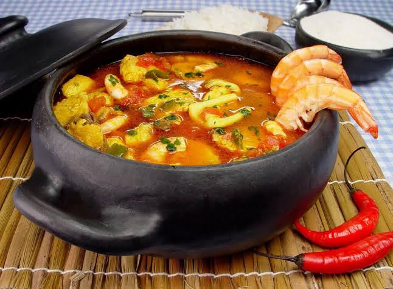

A cozinha do Maranhão é uma das expressões mais autênticas e singulares do Nordeste, destacando-se por priorizar o contraste marcante de sabores em vez de apostar no excesso de pimenta. Essa identidade própria nasce do encontro entre a ancestralidade indígena — presente no uso abundante da mandioca, do tucupi e das ervas nativas —, a herança africana, que trouxe a maestria no manuseio dos frutos do mar e dos guisados, e a tradição portuguesa, evidente nos preparos à base de azeite e nas técnicas de conservação. Por ter um litoral vasto e recortado por manguezais, rios e reentrâncias marítimas, a culinária local é profundamente moldada pela abundância de peixes e mariscos frescos, equilibrando o sal do oceano com o azedo característico das folhas da terra, como a vinagreira.
Sabor: Intenso, ácido e marinho
Textura: Úmida e levemente crocante devido ao gergelim e camarão.
Aparência: Tons esverdeados com pedaços de camarão seco.

A partir de meados do século XVIII, o Maranhão tornou-se um dos maiores produtores de arroz e algodão do Império Português. Nas fazendas das bacias dos rios Mearim e Pindaré, as pessoas escravizadas aproveitavam pequenos pedaços de terra para cultivar a vinagreira (planta resistente, riquíssima em ferro e vitamina C). Para dar sustento e sabor à alimentação diária, as cozinheiras negras criaram o cuxá: puncionavam as folhas de vinagreira cozidas num pilão de madeira com gergelim torrado, farinha de mandioca e camarão seco dessalgado — este último fornecido pelas populações pesqueiras e indígenas do litoral.
| Indígena | Africana | Árabe/Moura | Portuguesa |
|---|---|---|---|
| Farinha de mandioca, pimenta-de-cheiro e o conhecimento das ervas nativas. | O uso da vinagreira, o costume dos guisados encorpados e a própria nomenclatura Kutxá. | O hábito de macerar o gergelim torrado para enriquecer o molho. | O consumo do arroz e a adaptação das técnicas dos esparregos (pastas de vegetais piladas). |
Sabor: Delicado, fresco e aromático, com equilíbrio entre o gosto do peixe e os temperos verdes.
Textura: Caldo leve e reconfortante, com postas de peixe macias e ovos cozidos inteiros.
Aparência: Um ensopado colorido com pedaços de tomate, pimentão, cebola e ovos flutuando no caldo.

Os marinheiros e colonizadores ibéricos já tinham o costume de fazer a caldeirada — um cozido rápido feito na própria embarcação com a pesca do dia, água do mar e o que estivesse à mão. Ao chegarem ao litoral do Maranhão, adaptaram essa técnica espanhola e portuguesa aos ingredientes abundantes dos mangues e rios locais.
| Indígena | Africana | Portuguesa |
|---|---|---|
| O uso do tucupi, a escolha de peixes nobres de água doce/salgada e a finalização com o pirão de farinha d'água. | A preferência por cozidos densos em panelas de barro e o uso generoso de ervas e pimentas de cheiro. | A técnica ibérica da caldeirada de bordo (cozido de peixe em panela única) e a adição de ovos cozidos. |
Se o Arroz de Cuxá é a alma histórica do Maranhão, o Guaraná Jesus é o seu surto criativo mais genial (e saboroso). A história parece piada, mas é puramente a química do destino operando no Maranhão dos anos 1920.
Tudo começou com Jesus Norberto Gomes, um farmacêutico ateu, comunista e meio cientista maluco que tentou criar um xarope para a tosse (ou uma água tônica, a depender do folclore local). O remédio foi um absoluto fracasso digestivo: ficou amargo pra chuchu e ninguém conseguiu tomar.
Sem querer jogar os reagentes fora, seu Jesus resolveu improvisar. Tacou uma quantidade industrial de açúcar na mistura, adicionou extratos de cravo e canela, e o líquido misteriosamente ganhou uma cor cor-de-rosa choque digna de desenho animado.
Quando colocou gás e provou, viu que o "remédio" tinha virado um refrigerante com gosto de chiclete Tutto-Frutti de infância. O refrigerante virou uma febre instantânea em São Luís.